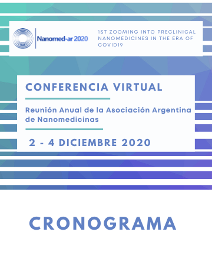
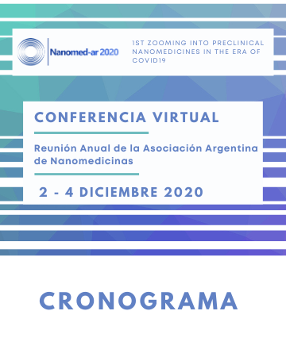

Miércoles 2/12
| 8:45 | Apertura - Hebe Durán Presidenta de NANOMED-AR |
| CONFERENCIA PLENARIA | |
| Chair: Hebe Durán / Marisa Taverna | |
| 9:00 | Dr. Juan Manuel Irache |
| Universidad de Navarra, España | |
| Potential of nanoparticles as adjuvants for mucosal vaccination | |
| 9:45 | Dr. Alejandro Sosnik |
| Technion - Israel Institute of Technology, Israel | |
| Nanotechnology strategies to target drugs to the Central Nervous System | |
| 10:30 | Dra. Eder Romero |
| Universidad Nacional de Quilmes, Argentina | |
| Friends or foes: Critical structural features of inhaled nanomedicines | |
| 11:15 | Break |
| CONFERENCIA SEMI-PLENARIA | |
| Chair: Hebe Durán / Marisa Taverna | |
| 11:30 | Dr. Federico Pitella |
| Universidade Federal de Juiz de Fora, Brasil | |
| Hybrid nanoparticles for siRNA delivery in anticancer therapy | |
| 12:00 | Dra. Marcela Nadal |
| CNEA-CONICET, Argentina | |
| Magnetic fluid hyperthermia and oxidative stress in tumor cells by iron oxide nanoparticles | |
| 12:30 | Dr. Pablo Scodeller |
| University of Tartu, Estonia | |
| Guiding and retaining nanomedicines in the site of interest using short peptides | |
| 13:00 | Almuerzo |
| 14:30 | Videos Flash Sesión 1 |
| Coordina: Romina Glisoni / Pablo Cabral | |
| 15:30 | Break |
| 15:45 | Videos Flash Sesión 2 |
| Coordina: María Julia Altube / Leticia Higa |
Jueves 3/12
| 8:45 | CONFERENCIA PLENARIA |
| Chair: Romina Glisoni / Leticia Higa | |
| 9:00 | Dr. Horacio Cabral |
| The University of Tokyo, Japón | |
| Ligand Strategies for Tumor-Targeted Nanomedicine | |
| 9:45 | Dr. Marcelo Calderón |
| University of the Basque Country España | |
| Multifunctional nanogels for near infrared (NIR) light-mediated anticancer therapy | |
| 10:30 | Dr. Marcelo Kogan |
| Advanced center for chronic diseases, Chile | |
| Nanomaterials for theranostics of Chronic Diseases | |
| 11:15 | Break |
| CONFERENCIA SEMI-PLENARIA | |
| Chair: Romina Glisoni / Leticia Higa | |
| 11:30 | Dr. Alan John Hibbitts |
| Royal College of Surgeons in Ireland, Irlanda | |
| Developing Biomaterial and Nanoparticle Solutions for Inflammation and Repair | |
| 12:00 | Dra. Priscila Schilrreff |
| Freie Universität Berlín, Alemania | |
| Skin disease models for testing local effects of nanomedicines | |
| 12:30 | Dra. Dolores Carrer |
| Instituto Ferreyra-INIMEC,Argentina | |
| Skin and Drugs | |
| 13:00 | Almuerzo |
| 14:30 | Videos Flash Sesión 3 |
| Coordina: Marisa Taverna / Hebe Durán | |
| 15:30 | Break |
| 15:45 | Videos Flash Sesión 4 |
| Coordina: Mariela Agotegaray / María Jose Morilla |
Viernes 4/12
| 8:45 | CONFERENCIA PLENARIA |
| Chair: Chair: Eder Romero / Mariela Agotegaray | |
| 9:00 | Dra. Eliana Souto |
| University of Coimbra, Portugal | |
| SLN/NLC for Precision Nanomedicine – Current State of the Art | |
| 9:45 | Dr. Bruno Sarmento |
| University of Porto, Portugal | |
| Combining mucodiffusion and epithelial transcytosis of nanoparticles to provide efficient absorption of anti-diabetic peptides | |
| 10:30 | Dra. Helena Pardo |
| Universidad de la Republica, Uruguay | |
| Inmuno-particulas de quitosano cargadas de docetaxel y funcionalizadas con anticuerpos Chi-Tin | |
| 11:15 | Break |
| CONFERENCIA SEMI-PLENARIA | |
| Chair: Eder Romero / Mariela Agotegaray | |
| 11:30 | Dra. Veronica Lasalle |
| Universidad Nacional del Sur, Argentina | |
| Development of polymeric gels, films and coatings destined to the fabrication of personal protection elements and inactivation of COVID 19 from different surfaces | |
| 12:00 | Dr. Fabio Rocha Formiga |
| University of Pernambuco (UPE), Brasil | |
| Ivermectin in COVID-19: formulation challenges ahead | |
| 12:30 | Cierre y entrega de premios |